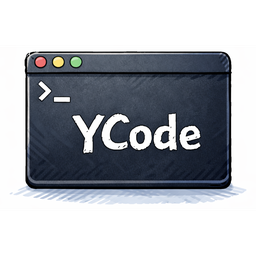

Subagent routing
Separate explore, plan, and code roles to reduce context pollution and keep terminal work deliberate.

Repository-native coding agent
A .NET 10 command line agent built for real repository work. YCode combines subagents, MCP tools, memory layers, and skill loading into one terminal-first flow.
dotnet tool install --global YCode.CLI
Core system
Separate explore, plan, and code roles to reduce context pollution and keep terminal work deliberate.
Extend the CLI with Model Context Protocol tools so file, task, and system operations stay composable.
Profile, daily, and project memory keep state across longer sessions and recurring tasks.
YAML and Markdown skill packs give the agent structured behavior without hard-coding every workflow.
Runtime map
User prompt, command invocation, and streaming console interaction.
Agent registration, service wiring, context management, and execution flow.
Agent catalog, memories, skills, todo flow, file ops, and MCP-backed tool execution.
Navigation
Signal